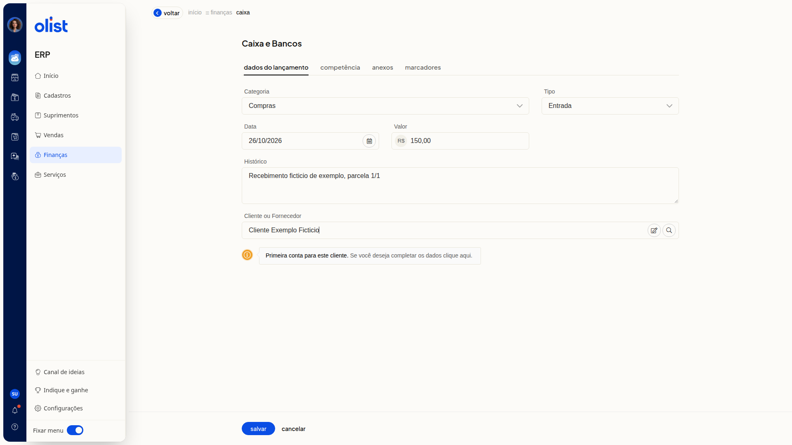
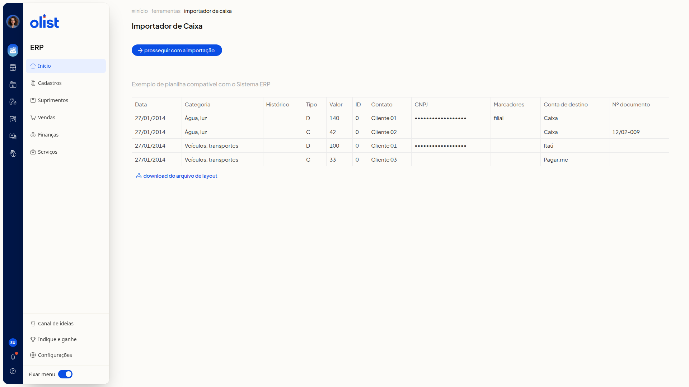

Como incluir um lançamento no Caixa e Bancos
Descrição
No ERP da Olist, a tela Caixa e Bancos lista os lançamentos da conta de caixa ou banco selecionada. Você pode registrar uma entrada, uma saída ou um saldo nessa conta.
Acesse Finanças > Caixa. Dá para incluir o lançamento pela tela, por planilha ou por extrato OFX.
Pré-requisitos
- Você precisa da permissão de Caixa para acessar Finanças > Caixa.
- Para incluir pela tela e para importar extrato OFX, você precisa da permissão de inclusão no Caixa.
- Para importar lançamentos de uma planilha, você precisa da permissão de inclusão e de edição no Caixa e da permissão de importação de registros.
- A conta de caixa ou banco já deve estar selecionada na lista. O nome da conta e o saldo atual aparecem no topo.
- Para a planilha, tenha um arquivo no layout exibido no Importador de Caixa. O botão Download do arquivo de layout fica nessa tela.
- Para o OFX, tenha um arquivo exportado pelo banco no formato OFX, de até 2Mb, referente à conta selecionada.
Importante
- Não é possível incluir um lançamento em data de período financeiro fechado. O rodapé da lista indica o financeiro fechado.
- Na aba Anexos, o arquivo não deve ultrapassar 2Mb.
- O arquivo OFX não deve ultrapassar 2Mb. Os registros entram na conta selecionada na lista.
Instruções
Pela tela
-
Acesse Finanças > Caixa.
-
Clique em Incluir lançamento.

-
Na aba Dados do lançamento, preencha os campos abaixo.
Dados do lançamento
- Categoria: não obrigatório. Selecione uma categoria cadastrada ou Adicionar nova categoria.
- Tipo: não obrigatório. Selecione Saída, Entrada ou Saldo.
- Data: não obrigatório. Informe no formato DD/MM/AAAA.
- Valor: não obrigatório.
- Histórico: não obrigatório.
- Cliente ou Fornecedor: não obrigatório. Se o cliente não estiver cadastrado, aparece o aviso Primeira conta para este cliente.

- Abra a aba Competência e informe o mês e o ano no navegador de mês. O campo Competência não é obrigatório.
- Abra a aba Anexos e clique em Procurar arquivo, se quiser anexar um arquivo de até 2Mb. O campo não é obrigatório.
- Abra a aba Marcadores e separe os marcadores por vírgula ou pela tecla Tab. O campo Marcadores não é obrigatório.
- Clique em Salvar. Para voltar à lista sem incluir o lançamento, clique em Cancelar.
Por planilha
-
Acesse Finanças > Caixa.
-
Clique em Mais ações.

-
Clique em Importar lançamentos de uma planilha.
-
Confira o layout de exemplo no Importador de Caixa. As colunas são:
- Data
- Categoria
- Histórico
- Tipo (D/C)
- Valor
- ID
- Contato
- CNPJ
- Marcadores
- Conta de destino
- Nº documento

-
Clique em Download do arquivo de layout para obter o modelo.
-
Clique em Prosseguir com a importação.
Por extrato OFX
-
Acesse Finanças > Caixa.
-
Confira a conta selecionada no topo da lista.
-
Clique em Mais ações e depois em Importar extrato OFX.
-
Confira no painel Importar dados que os registros entram na conta selecionada. O banco exporta as movimentações em OFX para importação no ERP.

-
Clique em Procurar arquivo e escolha um arquivo.ofx de até 2Mb. Para fechar o painel sem importar, clique em Cancelar.
Links relacionados
Se precisar de ajuda para incluir o lançamento, fale com o suporte.